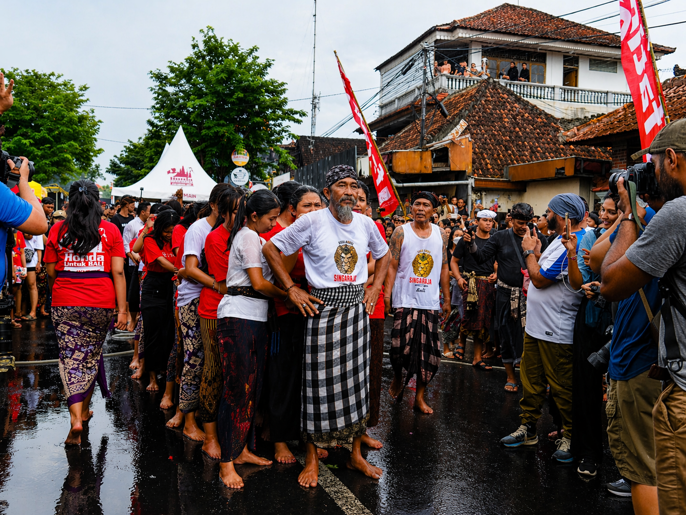

Omed-Omedan Gallery


JOYFUL SOCIAL TRADITION
A lively post-Nyepi tradition in Sesetan where laughter, community spirit, and playful celebration fill the streets.
Omed-Omedan is famously associated with Sesetan, Denpasar, making it one of Bali’s most localized and unique traditions.
Young men and women gather in two groups and are playfully pulled together by the crowd in a joyful social ritual.
Water splashes, cheers, smiles, and excitement create an atmosphere very different from the silence of Nyepi the day before.
The tradition symbolizes togetherness, social harmony, and renewed community spirit after reflection.
Omed-Omedan is usually held the day after Nyepi on Ngembak Geni.
It usually takes place in March.
Check the Nyepi date first, then count one day forward.
Sesetan Village, Denpasar, is the most famous place to experience it.
Crowds gather quickly, so arrive early for a better viewing spot.
Splashing water is common, so protect your phone and camera.
Keep pathways clear and follow directions from local organizers.
This is one of Bali’s happiest traditions—feel the energy and smiles.
